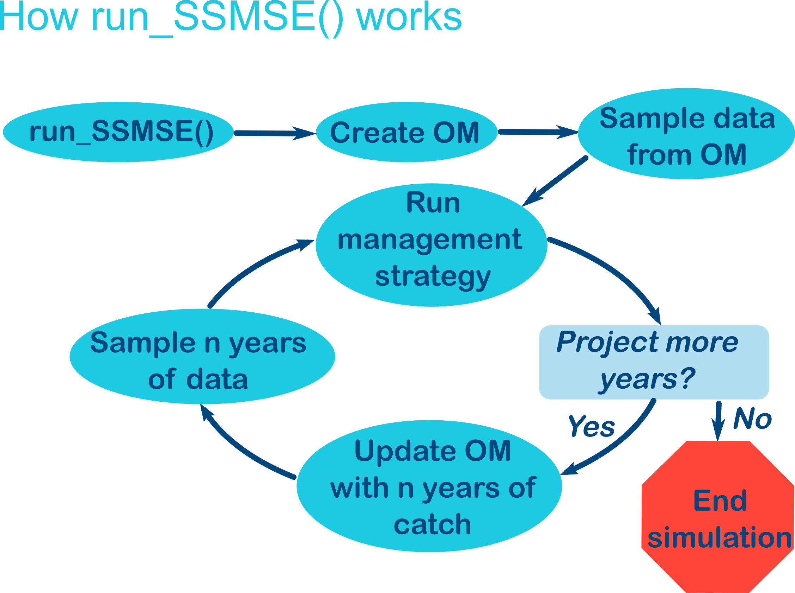

1 Introduction
1.1 Purpose
SSMSE allows users to directly use Stock Synthesis (SS3) as an operating model (OM) in a Management Strategy Evaluation (MSE) through R functions. The approach requires a conditioned Stock Synthesis model, which is treated as the OM.
## Decide if SSMSE is the right tool
Another simulation tool available is ss3sim. {ss3sim} helps users conduct simulation studies with SS3 operating models and estimation models. {ss3sim} is different than {SSMSE} beacuse:
- In {SSMSE}, there is feedback from the estimation method to the operating model and the operating model is projected forward. In {ss3sim}, there is no feedback and the operating model is not projected forward in time.
- {ss3sim} has more helper functions which modify the operating model and estimation model, but ss3sim is less flexible in the initial Operating models and estimation methods/models that can be used compared to {SSMSE}.
- {SSMSE} can use custom estimation methods; {ss3sim} must use a Stock Synthesis Estimation Model.
Please post this question regarding the suitability of {SSMSE} for your study in SSMSE discussions q+a.
1.2 Functions in SSMSE
The main functions users can call in SSMSE are:
| Function | Description |
|---|---|
run_SSMSE() |
Run the MSE simulations |
SSMSE_summary_all() |
Summarize MSE output |
The helper functions to create inputs to run_SSMSE are:
| Helper Function | Description |
|---|---|
create_sample_struct() |
Helper function to create a list for future sampling from a model to use as input in run_SSMSE() |
create_future_om_list() |
Helper function that provides examples of the structure for the future_om_list input to run_SSMSE(). |
develop_OMs() |
Helper function to turn one OM into many |
Exported functions that can be used for writing custom management strategies are:
| Function | Description |
|---|---|
run_EM() |
Run an SS3 estimation model (uses run_ss_model) |
run_ss_model() |
Run an SS3 model |
get_bin() |
Get location of the SS3 binary. |
parse_MS() |
Function that runs the management strategy and returns catch by fleet for the projections. A reference function for those setting up custom management strategies. |
Finally, some plotting functions are available:
| Plotting Function | Description |
|---|---|
plot_index_sampling() |
Plot to compare the sampled index values to the operating model expected values and original operating model conditioning index data. |
plot_comp_sampling() |
Plot to compare the sampled composition values to the operating model expected values and original operating model conditioning composition data. |
1.3 Brief description of the SSMSE MSE simulation procedure using run_SSMSE()
In general, the steps for a scenario after calling run_SSMSE is:
- Create the OM
- Sample data from the OM
- Run management strategy
- Determine if more years need to be projected. If yes, continue; if no, end simulation.
- Update OM with n years of catch where n is the number of years between assessments
- Sample n years of data
- Repeat steps 3-6 until the end of the simulation.
 The basic steps are contained in functions:
- User calls run_SSMSE
- Steps for one iteration are passed to run_SSMSE_scen() and then run_SSMSE_iter().
- The OM is created with create_OM()
- run_OM() runs the OM and creates the dataset to pass to the management strategy
- Parse_MS() is called, and runs the Management Strategy function (e.g., EM()), which projects catch forward.
- Update_OM() is called, which puts catch into the operating model.
- run_OM() runs the OM and creates the dataset to pass to the management strategy
- Parse_MS() is called, and runs the Management Strategy function (e.g., EM()), which projects catch forward.
- Determine if more years need to be projected. If yes, continue; if no, end simulation.
- Repeat steps 5-8.
1.3.1 Conditioning the OM and sampling from the OM
For each scenario, SSMSE starts with the user providing a fitted SSS3 model (or selecting an model from the SSMSE package) to use as an OM. For each iteration of the scenario, SSMSE turns the SS fitted model into an OM and runs it once with no estimation with Stock Synthesis in order to get the “true” values and a bootstrapped data set from SS3. Note that any modifications to the OM’s parameters specified by the users as it is extended forward in time are also applied.
1.3.2 First run of the management strategy in the MSE simulation
The bootstrapped dataset is then used in a Management strategy to project catch by fleet to use for the next \(n\) years, where \(n\) is the number of years between assessments.
1.3.3 Feedback from managment strategy into OM: extending model years
The catch for the next \(n\) years before the next assessment is then added to the OM, as well as any recruitment or time varying parameter deviations. The OM is again run with no estimation where it can be used to produce sampled data for the next \(n\) years. These new data values are appended to the original dataset.